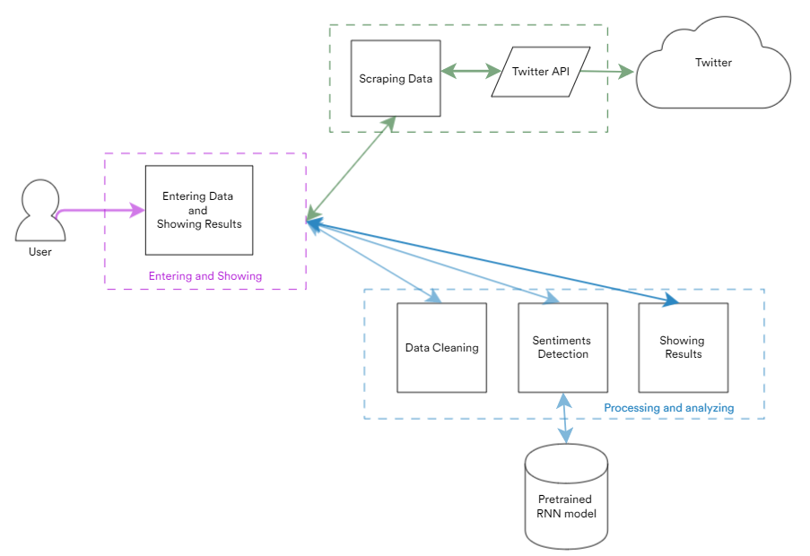
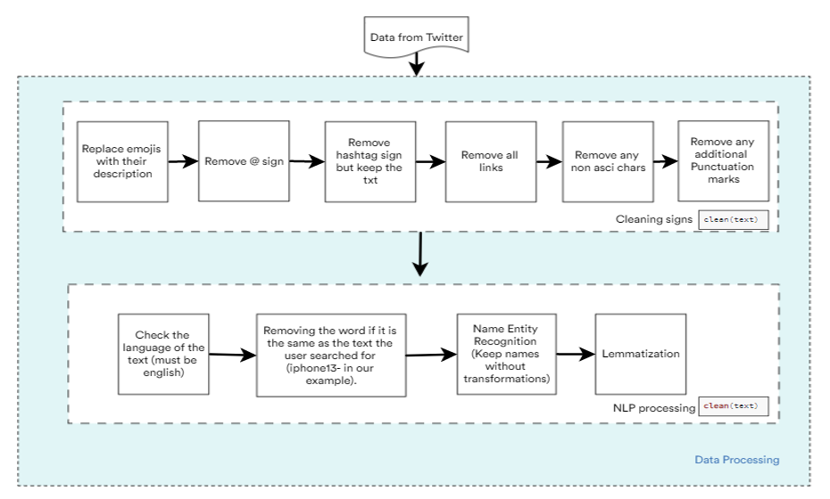

The main goal of this project is to scrape data from Twitter for a specific brand or product and try to classify the tweets
sentimatically as negative or positive tweets.
Project's Tasks
Social Media Monitoring Main Diagram
In the following figure we can see the main steps of the project: First of all we should select a string to search for, then we need to scrape Twitter for posts
containing that string. After that, the data will be cleaned, analyzed and presented in a way to show what sentiments are included in the tweets.

Data Processing
After scrapping data from Twitter. The preprocessing pipeline showed in the following figure will be applied.

Sentiment Analysis with RNN
The idea is to represent each token using the pretrained GloVe model, and feed these token representations
into a multilayer bidirectional RNN to obtain the text sequence representation, which will be transformed into sentiment analysis outputs.
Skills covered in this project
- Skills
Machine Learning, Natural Language Processing.
- Programing language
Python.
- Tools, Libraries, and Softwares
D2L, NLTK , and Spacy.